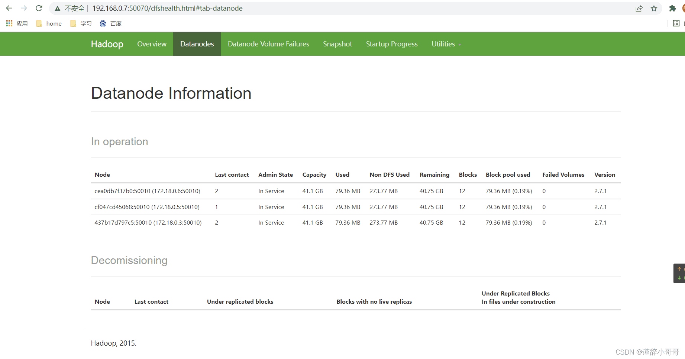

docker安装
官方教程 for Ubuntu
x#Uninstall old versions#Older versions of Docker were called docker, docker.io, or docker-engine. If these are installed, uninstall them:sudo apt-get remove docker docker-engine docker.io containerd runc
#Install using the repository#Before you install Docker Engine for the first time on a new host machine, you need to set up the Docker repository. Afterward, you can install and update Docker from the repository.#Set up the repository#Update the apt package index and install packages to allow apt to use a repository over HTTPS:sudo apt-get updatesudo apt-get install \ ca-certificates \ curl \ gnupg \ lsb-release
#Add Docker’s official GPG key:sudo mkdir -p /etc/apt/keyringscurl -fsSL https://download.docker.com/linux/ubuntu/gpg | sudo gpg --dearmor -o /etc/apt/keyrings/docker.gpg
#Use the following command to set up the repository:echo \ "deb [arch=$(dpkg --print-architecture) signed-by=/etc/apt/keyrings/docker.gpg] https://download.docker.com/linux/ubuntu \ $(lsb_release -cs) stable" | sudo tee /etc/apt/sources.list.d/docker.list > /dev/null #Install Docker Engine#Update the apt package index, and install the latest version of Docker Engine, containerd, and Docker Compose, or go to the next step to install a specific version:sudo apt-get updatesudo apt-get install docker-ce docker-ce-cli containerd.io docker-compose-plugin
使用Tsinghua源
xxxxxxxxxx#如果你过去安装过 docker,先删掉:sudo apt-get remove docker docker-engine docker.io containerd runc
#首先安装依赖:sudo apt-get install apt-transport-https ca-certificates curl gnupg2 software-properties-common
#根据你的发行版，下面的内容有所不同。#Ubuntu#信任 Docker 的 GPG 公钥:curl -fsSL https://download.docker.com/linux/ubuntu/gpg | sudo gpg --dearmor -o /etc/apt/keyrings/docker.gpg
#添加软件仓库:echo \ "deb [arch=$(dpkg --print-architecture) signed-by=/etc/apt/keyrings/docker.gpg] https://mirrors.tuna.tsinghua.edu.cn/docker-ce/linux/ubuntu \ $(lsb_release -cs) stable" | sudo tee /etc/apt/sources.list.d/docker.list > /dev/null
#最后安装sudo apt-get updatesudo apt-get install docker-ce
#Fedora/CentOS/RHEL#以下内容根据 官方文档 修改而来。#如果你之前安装过 docker，请先删掉sudo yum remove docker docker-client docker-client-latest docker-common docker-latest docker-latest-logrotate docker-logrotate docker-engine
#安装一些依赖sudo yum install -y yum-utils device-mapper-persistent-data lvm2
#根据你的发行版下载repo文件: CentOS/RHELyum-config-manager --add-repo https://download.docker.com/linux/centos/docker-ce.repo
#把软件仓库地址替换为 TUNA:sudo sed -i 's+download.docker.com+mirrors.tuna.tsinghua.edu.cn/docker-ce+' /etc/yum.repos.d/docker-ce.repo
#最后安装:sudo yum makecache fastsudo yum install docker-ce使用阿里源(推荐使用)
xxxxxxxxxx#Ubuntu 14.04/16.04（使用 apt-get 进行安装）# step 1: 安装必要的一些系统工具sudo apt-get updatesudo apt-get -y install apt-transport-https ca-certificates curl software-properties-common# step 2: 安装GPG证书curl -fsSL https://mirrors.aliyun.com/docker-ce/linux/ubuntu/gpg | sudo apt-key add -# Step 3: 写入软件源信息sudo add-apt-repository "deb [arch=amd64] https://mirrors.aliyun.com/docker-ce/linux/ubuntu $(lsb_release -cs) stable"# Step 4: 更新并安装Docker-CEsudo apt-get -y updatesudo apt-get -y install docker-ce
# 安装指定版本的Docker-CE:# Step 1: 查找Docker-CE的版本:# apt-cache madison docker-ce# docker-ce | 17.03.1~ce-0~ubuntu-xenial | https://mirrors.aliyun.com/docker-ce/linux/ubuntu xenial/stable amd64 Packages# docker-ce | 17.03.0~ce-0~ubuntu-xenial | https://mirrors.aliyun.com/docker-ce/linux/ubuntu xenial/stable amd64 Packages# Step 2: 安装指定版本的Docker-CE: (VERSION例如上面的17.03.1~ce-0~ubuntu-xenial)# sudo apt-get -y install docker-ce=[VERSION]
#CentOS 7（使用 yum 进行安装）# step 1: 安装必要的一些系统工具sudo yum install -y yum-utils device-mapper-persistent-data lvm2# Step 2: 添加软件源信息sudo yum-config-manager --add-repo https://mirrors.aliyun.com/docker-ce/linux/centos/docker-ce.repo# Step 3sudo sed -i 's+download.docker.com+mirrors.aliyun.com/docker-ce+' /etc/yum.repos.d/docker-ce.repo# Step 4: 更新并安装Docker-CEsudo yum makecache fastsudo yum -y install docker-ce# Step 4: 开启Docker服务sudo service docker start
# 注意：# 官方软件源默认启用了最新的软件，您可以通过编辑软件源的方式获取各个版本的软件包。例如官方并没有将测试版本的软件源置为可用，您可以通过以下方式开启。同理可以开启各种测试版本等。# vim /etc/yum.repos.d/docker-ce.repo# 将[docker-ce-test]下方的enabled=0修改为enabled=1## 安装指定版本的Docker-CE:# Step 1: 查找Docker-CE的版本:# yum list docker-ce.x86_64 --showduplicates | sort -r# Loading mirror speeds from cached hostfile# Loaded plugins: branch, fastestmirror, langpacks# docker-ce.x86_64 17.03.1.ce-1.el7.centos docker-ce-stable# docker-ce.x86_64 17.03.1.ce-1.el7.centos @docker-ce-stable# docker-ce.x86_64 17.03.0.ce-1.el7.centos docker-ce-stable# Available Packages# Step2: 安装指定版本的Docker-CE: (VERSION例如上面的17.03.0.ce.1-1.el7.centos)# sudo yum -y install docker-ce-[VERSION]使用ustc源
xxxxxxxxxx#安装 Docker CE，请按照 官方安装文档 ，选择你对应的系统。 以 Ubuntu 为例，参考 官方 Ubuntu 安装 Docker CE 手册 进行安装。 在阅读官方安装手册时，只要把 download.docker.com 地址换成 mirrors.ustc.edu.cn/docker-ce 即可。#CentOS、 Fedora 等用户在下载 docker-ce.repo 文件后（位于 /etc/yum.repos.d/）， 还需要将该文件中的 download.docker.com 地址换成 mirrors.ustc.edu.cn/docker-ce。
#Uninstall old versions#Older versions of Docker were called docker, docker.io, or docker-engine. If these are installed, uninstall them:sudo apt-get remove docker docker-engine docker.io containerd runc
#Install using the repository#Before you install Docker Engine for the first time on a new host machine, you need to set up the Docker repository. Afterward, you can install and update Docker from the repository.#Set up the repository#Update the apt package index and install packages to allow apt to use a repository over HTTPS:sudo apt-get updatesudo apt-get install \ ca-certificates \ curl \ gnupg \ lsb-release
#Add Docker’s official GPG key:sudo mkdir -p /etc/apt/keyringscurl -fsSL https://mirrors.ustc.edu.cn/docker-ce/linux/ubuntu/gpg | sudo gpg --dearmor -o /etc/apt/keyrings/docker.gpg
#Use the following command to set up the repository:echo \ "deb [arch=$(dpkg --print-architecture) signed-by=/etc/apt/keyrings/docker.gpg] https://mirrors.ustc.edu.cn/docker-ce/linux/ubuntu \ $(lsb_release -cs) stable" | sudo tee /etc/apt/sources.list.d/docker.list > /dev/null #Install Docker Engine#Update the apt package index, and install the latest version of Docker Engine, containerd, and Docker Compose, or go to the next step to install a specific version:sudo apt-get updatesudo apt-get install docker-ce docker-ce-cli containerd.io docker-compose-plugin使用sjtu源
xxxxxxxxxx#如果你过去安装过 docker，先删掉:sudo apt-get remove docker docker-engine docker.io#首先安装依赖:sudo apt-get install apt-transport-https ca-certificates curl gnupg2 software-properties-common#根据你的发行版，下面的内容有所不同。你使用的发行版：
#Debian#信任 Docker 的 GPG 公钥:curl -fsSL https://download.docker.com/linux/debian/gpg | sudo apt-key add -#对于 amd64 架构的计算机，添加软件仓库:sudo add-apt-repository \ "deb [arch=amd64] https://mirror.sjtu.edu.cn/docker-ce/linux/debian \ $(lsb_release -cs) \ stable"#如果你用的是树莓派或其它ARM架构计算机，请运行:echo "deb [arch=armhf] https://mirror.sjtu.edu.cn/docker-ce/linux/debian \ $(lsb_release -cs) stable" | \ sudo tee /etc/apt/sources.list.d/docker.list#最后安装sudo apt-get updatesudo apt-get install docker-ce
#Ubuntu#信任 Docker 的 GPG 公钥:curl -fsSL https://download.docker.com/linux/ubuntu/gpg | sudo apt-key add -#对于 amd64 架构的计算机，添加软件仓库:sudo add-apt-repository \ "deb [arch=amd64] https://mirror.sjtu.edu.cn/docker-ce/linux/ubuntu \ $(lsb_release -cs) \ stable"#如果你用的是树莓派或其它ARM架构计算机，请运行:echo "deb [arch=armhf] https://mirror.sjtu.edu.cn/docker-ce/linux/ubuntu \ $(lsb_release -cs) stable" | \ sudo tee /etc/apt/sources.list.d/docker.list#最后安装sudo apt-get updatesudo apt-get install docker-ce
#Fedora/CentOS/RHEL#以下内容根据TUNA文档修改而来。#如果你之前安装过 docker，请先删掉sudo yum remove docker docker-common docker-selinux docker-engine#安装一些依赖sudo yum install -y yum-utils device-mapper-persistent-data lvm2#根据你的发行版下载repo文件:
#CentOS/RHEL#Fedora#把软件仓库地址替换为 SJTUG:sudo sed -i 's+download.docker.com+mirror.sjtu.edu.cn/docker-ce+' /etc/yum.repos.d/docker-ce.repo#最后安装:sudo yum makecache fastsudo yum install docker-ce
docker-compose安装
apt安装
直接使用apt-get install
xxxxxxxxxxsudo apt-get install docker-compose
docker走代理
xxxxxxxxxxsudo cd /etc/systemd/system/#创建配置文件sudo mkdir docker.service.dcd docker.service.dsudo vim proxy.conf
#切换到插入模式，插入以下内容[Service]Environment="HTTP_PROXY=127.0.0.1:7890"Environment="HTTPS_PROXY=127.0.0.1:7890"#保存退出
#重启dockersudo systemctl daemon-reloadsudo systemctl restart docker
#最后我们仍然是验证一下是否修改成功，运行sudo docker info#在长串info信息中如果出现类似下文的内容：# HTTP Proxy: 代理服务器ip:port# HTTPS Proxy: 代理服务器ip:portWSL设置docker代理
当启动docker服务时，后调用/etc/init.d/docker脚本，而此脚本会执行/etc/default/docker脚本，因此可在后者设置代理的环境变量，由此docker拉取镜像时便会使用代理。
修改/etc/default/docker文件，加入以下内容:
xxxxxxxxxxexport http_proxy="127.0.0.1:7890"export https_proxy="127.0.0.1:7890"# 注意：https代理链接为http，Windows IP即为宿主机IP重启docker：sudo service docker restart
Portainer(docker面板)
xxxxxxxxxx#拉取镜像sudo docker pull portainer/portainer-ce:latest创建并启动容器
xxxxxxxxxx#不映射数据sudo docker run -d -p 8000:8000 -p 9443:9443 -p 9000:9000 --name portainer --restart=always -v /var/run/docker.sock:/var/run/docker.sock portainer/portainer-ce:latestxxxxxxxxxx#映射数据至指定目录sudo mkdir -p /mnt/toshiba/docker/portainer-default/sudo chown ubuntu /mnt/toshiba/docker/portainer-default/sudo docker run -d -p 8000:8000 -p 9443:9443 -p 9000:9000 --name portainer --restart=always -v /var/run/docker.sock:/var/run/docker.sock -v /mnt/toshiba/docker/portainer-default:/data portainer/portainer-ce:latest创建完毕后，访问9000端口。
Grafana
xxxxxxxxxxdocker run -d --name=grafana -p 3000:3000 grafana/grafana
docker run -d --name=grafana -p 3000:3000 grafana/grafana-enterprise
uptime-kuma(应用监控)
xxxxxxxxxxsudo docker pull elestio/uptime-kuma:1.23.10
sudo docker run -itd --name uptime-kuma-default -p 13001:3001 elestio/uptime-kuma:1.23.10
minio(分布式对象存储服务器)
xxxxxxxxxxsudo docker pull minio/minio:latestsudo mkdir -p /mnt/toshiba/docker/minio-default/datasudo chown ubuntu /mnt/toshiba/docker/minio-default/datasudo mkdir -p /mnt/toshiba/docker/minio-default/configsudo chown ubuntu /mnt/toshiba/docker/minio-default/config# 指定用户名和密码sudo docker run -itd --restart=always --name minio-default -p 9900:9000 -p 9901:9001 -v /mnt/toshiba/docker/minio-default/data:/data -v /mnt/toshiba/docker/minio-default/config:/root/.minio -e "MINIO_ROOT_USER=minioadmin" -e "MINIO_ROOT_PASSWORD=10203090" minio/minio:latest server /data --console-address ":9001"
# 不指定用户名和密码，默认为minioadmin,minioadminsudo docker run -itd --restart=always --name minio-default -p 9900:9000 -p 9901:9001 -v /mnt/toshiba/docker/minio-default/data:/data -v /mnt/toshiba/docker/minio-default/config:/root/.minio minio/minio:latest server /data --console-address ":9001"
sun-panel
xxxxxxxxxxsudo docker run -d --restart=always -p 8226:3002 -v ~/docker_data/sun-panel/conf:/app/conf -v /var/run/docker.sock:/var/run/docker.sock --name sun-panel hslr/sun-panel:1.5.2默认账号密码
账号：admin@sun.cc
密码：12345678
1panel(Linux运维面板)
https://hub.docker.com/r/moelin/1panel
由于容器内部systemd限制，部分功能目前尚不完整。
20230919：添加自动修改面板显示应用版本，无需手动修改数据库
相关操作查看下文。
默认端口：
10086默认账户：
1panel默认密码：
1panel_password默认入口：
entrance
docker方式安装：
xxxxxxxxxxsudo docker pull moelin/1panel:v1.10.1-lts
sudo docker run -d --name 1panel-default --restart always --network host -p 10086:10086 -v /var/run/docker.sock:/var/run/docker.sock -v /var/lib/docker/volumes:/var/lib/docker/volumes -v /opt:/opt -v /root:/root -e TZ=Asia/Shanghai moelin/1panel:v1.10.1-ltsdocker-compose方式安装：
xxxxxxxxxx#创建一个docker-compose.yml文件，内容类似如下version'3'services 1panel container_name1panel # 容器名 restartalways network_mode"host" volumes/var/run/docker.sock:/var/run/docker.sock/var/lib/docker/volumes:/var/lib/docker/volumes/opt:/opt # 文件存储映射/root:/root # 可选的文件存储映射 environmentTZ=Asia/Shanghai # 时区设置 imagemoelin/1panellatest labels createdBy"Apps"#然后docker-compose up -d运行
code-server
codercon/code-server
xxxxxxxxxx#sudo docker pull codercom/code-server:4.89.1-39sudo docker pull codercom/code-server:latestsudo mkdir -p /home/ubuntu/docker/code-server/project/sudo mkdir -p /home/ubuntu/docker/code-server/.config/
#sudo docker run -itd --name code-server-default -p 8240:8080 -v "/home/ubuntu/docker/code-server/.config:/home/coder/.config" -v "/home/ubuntu/docker/code-server/project:/home/coder/project" -u "$(id -u):$(id -g)" -e "DOCKER_USER=$USER" codercom/code-server:4.89.1-39
sudo docker run -itd --name code-server-default -p 8240:8080 -v "/home/ubuntu/docker/code-server/.config:/home/coder/.config" -v "/home/ubuntu/docker/code-server/project:/home/coder/project" -u "$(id -u):$(id -g)" -e "DOCKER_USER=$USER" codercom/code-server:latest
#sudo docker run -itd --name code-server-default -p 8240:8080 -v "/home/ubuntu/docker/code-server/.config:/home/coder/.config" -v "/home/ubuntu/docker/code-server/project:/home/coder/project" -u "$(id -u):$(id -g)" -e "DOCKER_USER=$USER" -e PASSWORD=123456 codercom/code-server:latest密码在.config/code-server/config.yaml中。
linuxserver/code-server
xxxxxxxxxx#docker pull linuxserver/code-server:4.89.1docker pull linuxserver/code-server:latestsudo mkdir -p /home/ubuntu/docker/code-server/project/sudo mkdir -p /home/ubuntu/docker/code-server/config/
#docker run -d --name=code-server -e PUID=1000 -e PGID=1000 -e TZ=Etc/UTC -e PASSWORD=password -e SUDO_PASSWORD=password -e DEFAULT_WORKSPACE=/config/workspace -p 8240:8443 -v /home/ubuntu/docker/code-server/config:/config --restart unless-stopped linuxserver/code-server:4.89.1
docker run -d --name=code-server -e PUID=1000 -e PGID=1000 -e TZ=Etc/UTC -e PASSWORD=password -e SUDO_PASSWORD=password -e DEFAULT_WORKSPACE=/config/workspace -p 8240:8443 -v /home/ubuntu/docker/code-server/config:/config --restart unless-stopped linuxserver/code-server:latest
mysql8部署
部署命令
拉取镜像
xxxxxxxxxxsudo docker pull mysql运行
xxxxxxxxxx#创建映射目录sudo mkdir -p /home/ubuntu/docker/mysql-default/confsudo mkdir -p /home/ubuntu/docker/mysql-default/logssudo mkdir -p /home/ubuntu/docker/mysql-default/data
#启动容器sudo docker run -it --name mysql-default -p 3080:3306 -e MYSQL_ROOT_PASSWORD=123456 --restart=always -v /home/ubuntu/docker/mysql-default/conf:/etc/mysql/conf.d -v /home/ubuntu/docker/mysql-default/logs:/var/log/mysql -v /home/ubuntu/docker/mysql-default/data:/var/lib/mysql mysql
# 报错：[ERROR] [Entrypoint]: mysqld failed while attempting to check config# command was: mysqld --verbose --help --log-bin-index=/tmp/tmp.UI6ajKmnml# mysqld: Can't read dir of '/etc/mysql/conf.d/' (OS errno 2 - No such file or #directory)# mysql5.7的配置在 /etc/mysql# mysql8.0以上的配置位置在 /etc/mysql/conf.d#/mydata/mysql/conf:/etc/mysql# ||# ||# ||# \/#/mydata/mysql/conf:/etc/mysql/conf.d
配置命令
进入容器
xxxxxxxxxxsudo docker exec -it mysql-default /bin/bash
mysql5.7部署
部署命令
拉取镜像
xxxxxxxxxxsudo docker pull mysql:5.7运行
xxxxxxxxxx#创建映射目录sudo mkdir -p /home/ubuntu/docker/mysql5-default/confsudo mkdir -p /home/ubuntu/docker/mysql5-default/logssudo mkdir -p /home/ubuntu/docker/mysql5-default/mysql
#创建配置文件cd /home/ubuntu/docker/mysql5-default/conf/sudo vi my.cnf‘’‘# Copyright (c) 2014, 2016, Oracle and/or its affiliates. All rights reserved.## This program is free software; you can redistribute it and/or modify# it under the terms of the GNU General Public License as published by# the Free Software Foundation; version 2 of the License.## This program is distributed in the hope that it will be useful,# but WITHOUT ANY WARRANTY; without even the implied warranty of# MERCHANTABILITY or FITNESS FOR A PARTICULAR PURPOSE. See the# GNU General Public License for more details.## You should have received a copy of the GNU General Public License# along with this program; if not, write to the Free Software# Foundation, Inc., 51 Franklin St, Fifth Floor, Boston, MA 02110-1301 USA
## The MySQL Server configuration file.## For explanations see# http://dev.mysql.com/doc/mysql/en/server-system-variables.html
[mysqld]pid-file = /var/run/mysqld/mysqld.pidsocket = /var/run/mysqld/mysqld.sockdatadir = /var/lib/mysql#log-error = /var/log/mysql/error.log# Disabling symbolic-links is recommended to prevent assorted security riskssymbolic-links=0
max_connections = 2000max_user_connections = 1900max_connect_errors = 100000max_allowed_packet = 50Mlower_case_table_names=1[mysqld]skip-name-resolvesql_mode=STRICT_TRANS_TABLES,NO_ZERO_IN_DATE,NO_ZERO_DATE,ERROR_FOR_DIVISION_BY_ZERO,NO_AUTO_CREATE_USER,NO_ENGINE_SUBSTITUTION’‘’#保存后退出
#启动容器sudo docker run -p 3090:3306 --name mysql5-default --restart=always -v /home/ubuntu/docker/mysql5-default/conf/my.cnf:/etc/mysql/my.cnf -v /home/ubuntu/docker/mysql5-default/logs:/logs -v /home/ubuntu/docker/mysql5-default/mysql:/var/lib/mysql -e MYSQL_ROOT_PASSWORD=123456 -d mysql:5.7
配置命令
xxxxxxxxxxsudo docker exec -it mysql5-default /bin/bash
mongodb部署
部署命令
拉取镜像
xxxxxxxxxxsudo docker pull mongo运行
xxxxxxxxxxsudo docker run --name=mongodb-default --restart=always -p 27017:27017 -itd -v /home/ubuntu/docker/mongodb-default/data:/data/db -v/home/ubuntu/docker/mongodb-default/backup:/data/backup -v /home/ubuntu/docker/mongodb-default/conf:/data/configdb mongo --auth进入mongo容器
xxxxxxxxxxsudo docker exec -it mongodb-default mongosh admin添加账号
xxxxxxxxxxdb.createUser({user:'admin',pwd:'123456',roles:[{role:'root',db:'admin'}],});db.auth('admin','123456');#读取权限的账户db.createUser({user:'user',pwd:'123456',roles:[{role:"readWrite",db:"elec_safe"}]});db.auth("user","123456");
apache2部署
部署命令
拉取镜像
xxxxxxxxxxsudo docker pull httpd运行
注：若容器运行后自动无限重启，可使用sudo docker logs httpd-default查看日志输出。
如果输出日志报错AH00534: httpd............，则根据以下命令，在启动容器前先修改httpd.conf的内容/或直接复制全新的httpd.conf。
xxxxxxxxxx#创建映射目录sudo mkdir -p /home/ubuntu/docker/httpd-default/htdocssudo mkdir -p /home/ubuntu/docker/httpd-default/confsudo touch /home/ubuntu/docker/httpd-default/conf/httpd.confsudo mkdir -p /home/ubuntu/docker/httpd-default/logs
#编辑httpd.conf文件内容'''## This is the main Apache HTTP server configuration file. It contains the# configuration directives that give the server its instructions.# See <URL:http://httpd.apache.org/docs/2.4/> for detailed information.# In particular, see # <URL:http://httpd.apache.org/docs/2.4/mod/directives.html># for a discussion of each configuration directive.## Do NOT simply read the instructions in here without understanding# what they do. They're here only as hints or reminders. If you are unsure# consult the online docs. You have been warned. ## Configuration and logfile names: If the filenames you specify for many# of the server's control files begin with "/" (or "drive:/" for Win32), the# server will use that explicit path. If the filenames do *not* begin# with "/", the value of ServerRoot is prepended -- so "logs/access_log"# with ServerRoot set to "/usr/local/apache2" will be interpreted by the# server as "/usr/local/apache2/logs/access_log", whereas "/logs/access_log" # will be interpreted as '/logs/access_log'.
## ServerRoot: The top of the directory tree under which the server's# configuration, error, and log files are kept.## Do not add a slash at the end of the directory path. If you point# ServerRoot at a non-local disk, be sure to specify a local disk on the# Mutex directive, if file-based mutexes are used. If you wish to share the# same ServerRoot for multiple httpd daemons, you will need to change at# least PidFile.#ServerRoot "/usr/local/apache2"
## Mutex: Allows you to set the mutex mechanism and mutex file directory# for individual mutexes, or change the global defaults## Uncomment and change the directory if mutexes are file-based and the default# mutex file directory is not on a local disk or is not appropriate for some# other reason.## Mutex default:logs
## Listen: Allows you to bind Apache to specific IP addresses and/or# ports, instead of the default. See also the <VirtualHost># directive.## Change this to Listen on specific IP addresses as shown below to # prevent Apache from glomming onto all bound IP addresses.##Listen 12.34.56.78:80Listen 80
## Dynamic Shared Object (DSO) Support## To be able to use the functionality of a module which was built as a DSO you# have to place corresponding `LoadModule' lines at this location so the# directives contained in it are actually available _before_ they are used.# Statically compiled modules (those listed by `httpd -l') do not need# to be loaded here.## Example:# LoadModule foo_module modules/mod_foo.so#LoadModule mpm_event_module modules/mod_mpm_event.so#LoadModule mpm_prefork_module modules/mod_mpm_prefork.so#LoadModule mpm_worker_module modules/mod_mpm_worker.soLoadModule authn_file_module modules/mod_authn_file.so#LoadModule authn_dbm_module modules/mod_authn_dbm.so#LoadModule authn_anon_module modules/mod_authn_anon.so#LoadModule authn_dbd_module modules/mod_authn_dbd.so#LoadModule authn_socache_module modules/mod_authn_socache.soLoadModule authn_core_module modules/mod_authn_core.soLoadModule authz_host_module modules/mod_authz_host.soLoadModule authz_groupfile_module modules/mod_authz_groupfile.soLoadModule authz_user_module modules/mod_authz_user.so#LoadModule authz_dbm_module modules/mod_authz_dbm.so#LoadModule authz_owner_module modules/mod_authz_owner.so#LoadModule authz_dbd_module modules/mod_authz_dbd.soLoadModule authz_core_module modules/mod_authz_core.so#LoadModule authnz_ldap_module modules/mod_authnz_ldap.so#LoadModule authnz_fcgi_module modules/mod_authnz_fcgi.soLoadModule access_compat_module modules/mod_access_compat.soLoadModule auth_basic_module modules/mod_auth_basic.so#LoadModule auth_form_module modules/mod_auth_form.so#LoadModule auth_digest_module modules/mod_auth_digest.so#LoadModule allowmethods_module modules/mod_allowmethods.so#LoadModule isapi_module modules/mod_isapi.so#LoadModule file_cache_module modules/mod_file_cache.so#LoadModule cache_module modules/mod_cache.so#LoadModule cache_disk_module modules/mod_cache_disk.so#LoadModule cache_socache_module modules/mod_cache_socache.so#LoadModule socache_shmcb_module modules/mod_socache_shmcb.so#LoadModule socache_dbm_module modules/mod_socache_dbm.so#LoadModule socache_memcache_module modules/mod_socache_memcache.so#LoadModule socache_redis_module modules/mod_socache_redis.so#LoadModule watchdog_module modules/mod_watchdog.so#LoadModule macro_module modules/mod_macro.so#LoadModule dbd_module modules/mod_dbd.so#LoadModule bucketeer_module modules/mod_bucketeer.so#LoadModule dumpio_module modules/mod_dumpio.so#LoadModule echo_module modules/mod_echo.so#LoadModule example_hooks_module modules/mod_example_hooks.so#LoadModule case_filter_module modules/mod_case_filter.so#LoadModule case_filter_in_module modules/mod_case_filter_in.so#LoadModule example_ipc_module modules/mod_example_ipc.so#LoadModule buffer_module modules/mod_buffer.so#LoadModule data_module modules/mod_data.so#LoadModule ratelimit_module modules/mod_ratelimit.soLoadModule reqtimeout_module modules/mod_reqtimeout.so#LoadModule ext_filter_module modules/mod_ext_filter.so#LoadModule request_module modules/mod_request.so#LoadModule include_module modules/mod_include.soLoadModule filter_module modules/mod_filter.so#LoadModule reflector_module modules/mod_reflector.so#LoadModule substitute_module modules/mod_substitute.so#LoadModule sed_module modules/mod_sed.so#LoadModule charset_lite_module modules/mod_charset_lite.so#LoadModule deflate_module modules/mod_deflate.so#LoadModule xml2enc_module modules/mod_xml2enc.so#LoadModule proxy_html_module modules/mod_proxy_html.so#LoadModule brotli_module modules/mod_brotli.soLoadModule mime_module modules/mod_mime.so#LoadModule ldap_module modules/mod_ldap.soLoadModule log_config_module modules/mod_log_config.so#LoadModule log_debug_module modules/mod_log_debug.so#LoadModule log_forensic_module modules/mod_log_forensic.so#LoadModule logio_module modules/mod_logio.so#LoadModule lua_module modules/mod_lua.soLoadModule env_module modules/mod_env.so#LoadModule mime_magic_module modules/mod_mime_magic.so#LoadModule cern_meta_module modules/mod_cern_meta.so#LoadModule expires_module modules/mod_expires.soLoadModule headers_module modules/mod_headers.so#LoadModule ident_module modules/mod_ident.so#LoadModule usertrack_module modules/mod_usertrack.so#LoadModule unique_id_module modules/mod_unique_id.soLoadModule setenvif_module modules/mod_setenvif.soLoadModule version_module modules/mod_version.so#LoadModule remoteip_module modules/mod_remoteip.so#LoadModule proxy_module modules/mod_proxy.so#LoadModule proxy_connect_module modules/mod_proxy_connect.so#LoadModule proxy_ftp_module modules/mod_proxy_ftp.so#LoadModule proxy_http_module modules/mod_proxy_http.so#LoadModule proxy_fcgi_module modules/mod_proxy_fcgi.so#LoadModule proxy_scgi_module modules/mod_proxy_scgi.so#LoadModule proxy_uwsgi_module modules/mod_proxy_uwsgi.so#LoadModule proxy_fdpass_module modules/mod_proxy_fdpass.so#LoadModule proxy_wstunnel_module modules/mod_proxy_wstunnel.so#LoadModule proxy_ajp_module modules/mod_proxy_ajp.so#LoadModule proxy_balancer_module modules/mod_proxy_balancer.so#LoadModule proxy_express_module modules/mod_proxy_express.so#LoadModule proxy_hcheck_module modules/mod_proxy_hcheck.so#LoadModule session_module modules/mod_session.so#LoadModule session_cookie_module modules/mod_session_cookie.so#LoadModule session_crypto_module modules/mod_session_crypto.so#LoadModule session_dbd_module modules/mod_session_dbd.so#LoadModule slotmem_shm_module modules/mod_slotmem_shm.so#LoadModule slotmem_plain_module modules/mod_slotmem_plain.so#LoadModule ssl_module modules/mod_ssl.so#LoadModule optional_hook_export_module modules/mod_optional_hook_export.so#LoadModule optional_hook_import_module modules/mod_optional_hook_import.so#LoadModule optional_fn_import_module modules/mod_optional_fn_import.so#LoadModule optional_fn_export_module modules/mod_optional_fn_export.so#LoadModule dialup_module modules/mod_dialup.so#LoadModule http2_module modules/mod_http2.so#LoadModule proxy_http2_module modules/mod_proxy_http2.so#LoadModule md_module modules/mod_md.so#LoadModule lbmethod_byrequests_module modules/mod_lbmethod_byrequests.so#LoadModule lbmethod_bytraffic_module modules/mod_lbmethod_bytraffic.so#LoadModule lbmethod_bybusyness_module modules/mod_lbmethod_bybusyness.so#LoadModule lbmethod_heartbeat_module modules/mod_lbmethod_heartbeat.soLoadModule unixd_module modules/mod_unixd.so#LoadModule heartbeat_module modules/mod_heartbeat.so#LoadModule heartmonitor_module modules/mod_heartmonitor.so#LoadModule dav_module modules/mod_dav.soLoadModule status_module modules/mod_status.soLoadModule autoindex_module modules/mod_autoindex.so#LoadModule asis_module modules/mod_asis.so#LoadModule info_module modules/mod_info.so#LoadModule suexec_module modules/mod_suexec.so<IfModule !mpm_prefork_module> #LoadModule cgid_module modules/mod_cgid.so</IfModule><IfModule mpm_prefork_module> #LoadModule cgi_module modules/mod_cgi.so</IfModule>#LoadModule dav_fs_module modules/mod_dav_fs.so#LoadModule dav_lock_module modules/mod_dav_lock.so#LoadModule vhost_alias_module modules/mod_vhost_alias.so#LoadModule negotiation_module modules/mod_negotiation.soLoadModule dir_module modules/mod_dir.so#LoadModule imagemap_module modules/mod_imagemap.so#LoadModule actions_module modules/mod_actions.so#LoadModule speling_module modules/mod_speling.so#LoadModule userdir_module modules/mod_userdir.soLoadModule alias_module modules/mod_alias.so#LoadModule rewrite_module modules/mod_rewrite.so
<IfModule unixd_module>## If you wish httpd to run as a different user or group, you must run# httpd as root initially and it will switch. ## User/Group: The name (or #number) of the user/group to run httpd as.# It is usually good practice to create a dedicated user and group for# running httpd, as with most system services.#User www-dataGroup www-data
</IfModule>
# 'Main' server configuration## The directives in this section set up the values used by the 'main'# server, which responds to any requests that aren't handled by a# <VirtualHost> definition. These values also provide defaults for# any <VirtualHost> containers you may define later in the file.## All of these directives may appear inside <VirtualHost> containers,# in which case these default settings will be overridden for the# virtual host being defined.#
## ServerAdmin: Your address, where problems with the server should be# e-mailed. This address appears on some server-generated pages, such# as error documents. e.g. admin@your-domain.com#ServerAdmin you@example.com
## ServerName gives the name and port that the server uses to identify itself.# This can often be determined automatically, but we recommend you specify# it explicitly to prevent problems during startup.## If your host doesn't have a registered DNS name, enter its IP address here.##ServerName www.example.com:80
## Deny access to the entirety of your server's filesystem. You must# explicitly permit access to web content directories in other # <Directory> blocks below.#<Directory /> AllowOverride none Require all denied</Directory>
## Note that from this point forward you must specifically allow# particular features to be enabled - so if something's not working as# you might expect, make sure that you have specifically enabled it# below.#
## DocumentRoot: The directory out of which you will serve your# documents. By default, all requests are taken from this directory, but# symbolic links and aliases may be used to point to other locations.#DocumentRoot "/usr/local/apache2/htdocs"<Directory "/usr/local/apache2/htdocs"> # # Possible values for the Options directive are "None", "All", # or any combination of: # Indexes Includes FollowSymLinks SymLinksifOwnerMatch ExecCGI MultiViews # # Note that "MultiViews" must be named *explicitly* --- "Options All" # doesn't give it to you. # # The Options directive is both complicated and important. Please see # http://httpd.apache.org/docs/2.4/mod/core.html#options # for more information. # Options Indexes FollowSymLinks
# # AllowOverride controls what directives may be placed in .htaccess files. # It can be "All", "None", or any combination of the keywords: # AllowOverride FileInfo AuthConfig Limit # AllowOverride None
# # Controls who can get stuff from this server. # Require all granted</Directory>
## DirectoryIndex: sets the file that Apache will serve if a directory# is requested.#<IfModule dir_module> DirectoryIndex index.html</IfModule>
## The following lines prevent .htaccess and .htpasswd files from being # viewed by Web clients. #<Files ".ht*"> Require all denied</Files>
## ErrorLog: The location of the error log file.# If you do not specify an ErrorLog directive within a <VirtualHost># container, error messages relating to that virtual host will be# logged here. If you *do* define an error logfile for a <VirtualHost># container, that host's errors will be logged there and not here.#ErrorLog /proc/self/fd/2
## LogLevel: Control the number of messages logged to the error_log.# Possible values include: debug, info, notice, warn, error, crit,# alert, emerg.#LogLevel warn
<IfModule log_config_module> # # The following directives define some format nicknames for use with # a CustomLog directive (see below). # LogFormat "%h %l %u %t \"%r\" %>s %b \"%{Referer}i\" \"%{User-Agent}i\"" combined LogFormat "%h %l %u %t \"%r\" %>s %b" common
<IfModule logio_module> # You need to enable mod_logio.c to use %I and %O LogFormat "%h %l %u %t \"%r\" %>s %b \"%{Referer}i\" \"%{User-Agent}i\" %I %O" combinedio </IfModule>
# # The location and format of the access logfile (Common Logfile Format). # If you do not define any access logfiles within a <VirtualHost> # container, they will be logged here. Contrariwise, if you *do* # define per-<VirtualHost> access logfiles, transactions will be # logged therein and *not* in this file. # CustomLog /proc/self/fd/1 common
# # If you prefer a logfile with access, agent, and referer information # (Combined Logfile Format) you can use the following directive. # #CustomLog "logs/access_log" combined</IfModule>
<IfModule alias_module> # # Redirect: Allows you to tell clients about documents that used to # exist in your server's namespace, but do not anymore. The client # will make a new request for the document at its new location. # Example: # Redirect permanent /foo http://www.example.com/bar
# # Alias: Maps web paths into filesystem paths and is used to # access content that does not live under the DocumentRoot. # Example: # Alias /webpath /full/filesystem/path # # If you include a trailing / on /webpath then the server will # require it to be present in the URL. You will also likely # need to provide a <Directory> section to allow access to # the filesystem path.
# # ScriptAlias: This controls which directories contain server scripts. # ScriptAliases are essentially the same as Aliases, except that # documents in the target directory are treated as applications and # run by the server when requested rather than as documents sent to the # client. The same rules about trailing "/" apply to ScriptAlias # directives as to Alias. # ScriptAlias /cgi-bin/ "/usr/local/apache2/cgi-bin/"
</IfModule>
<IfModule cgid_module> # # ScriptSock: On threaded servers, designate the path to the UNIX # socket used to communicate with the CGI daemon of mod_cgid. # #Scriptsock cgisock</IfModule>
## "/usr/local/apache2/cgi-bin" should be changed to whatever your ScriptAliased# CGI directory exists, if you have that configured.#<Directory "/usr/local/apache2/cgi-bin"> AllowOverride None Options None Require all granted</Directory>
<IfModule headers_module> # # Avoid passing HTTP_PROXY environment to CGI's on this or any proxied # backend servers which have lingering "httpoxy" defects. # 'Proxy' request header is undefined by the IETF, not listed by IANA # RequestHeader unset Proxy early</IfModule>
<IfModule mime_module> # # TypesConfig points to the file containing the list of mappings from # filename extension to MIME-type. # TypesConfig conf/mime.types
# # AddType allows you to add to or override the MIME configuration # file specified in TypesConfig for specific file types. # #AddType application/x-gzip .tgz # # AddEncoding allows you to have certain browsers uncompress # information on the fly. Note: Not all browsers support this. # #AddEncoding x-compress .Z #AddEncoding x-gzip .gz .tgz # # If the AddEncoding directives above are commented-out, then you # probably should define those extensions to indicate media types: # AddType application/x-compress .Z AddType application/x-gzip .gz .tgz
# # AddHandler allows you to map certain file extensions to "handlers": # actions unrelated to filetype. These can be either built into the server # or added with the Action directive (see below) # # To use CGI scripts outside of ScriptAliased directories: # (You will also need to add "ExecCGI" to the "Options" directive.) # #AddHandler cgi-script .cgi
# For type maps (negotiated resources): #AddHandler type-map var
# # Filters allow you to process content before it is sent to the client. # # To parse .shtml files for server-side includes (SSI): # (You will also need to add "Includes" to the "Options" directive.) # #AddType text/html .shtml #AddOutputFilter INCLUDES .shtml</IfModule>
## The mod_mime_magic module allows the server to use various hints from the# contents of the file itself to determine its type. The MIMEMagicFile# directive tells the module where the hint definitions are located.##MIMEMagicFile conf/magic
## Customizable error responses come in three flavors:# 1) plain text 2) local redirects 3) external redirects## Some examples:#ErrorDocument 500 "The server made a boo boo."#ErrorDocument 404 /missing.html#ErrorDocument 404 "/cgi-bin/missing_handler.pl"#ErrorDocument 402 http://www.example.com/subscription_info.html#
## MaxRanges: Maximum number of Ranges in a request before# returning the entire resource, or one of the special# values 'default', 'none' or 'unlimited'.# Default setting is to accept 200 Ranges.#MaxRanges unlimited
## EnableMMAP and EnableSendfile: On systems that support it, # memory-mapping or the sendfile syscall may be used to deliver# files. This usually improves server performance, but must# be turned off when serving from networked-mounted # filesystems or if support for these functions is otherwise# broken on your system.# Defaults: EnableMMAP On, EnableSendfile Off##EnableMMAP off#EnableSendfile on
# Supplemental configuration## The configuration files in the conf/extra/ directory can be # included to add extra features or to modify the default configuration of # the server, or you may simply copy their contents here and change as # necessary.
# Server-pool management (MPM specific)#Include conf/extra/httpd-mpm.conf
# Multi-language error messages#Include conf/extra/httpd-multilang-errordoc.conf
# Fancy directory listings#Include conf/extra/httpd-autoindex.conf
# Language settings#Include conf/extra/httpd-languages.conf
# User home directories#Include conf/extra/httpd-userdir.conf
# Real-time info on requests and configuration#Include conf/extra/httpd-info.conf
# Virtual hosts#Include conf/extra/httpd-vhosts.conf
# Local access to the Apache HTTP Server Manual#Include conf/extra/httpd-manual.conf
# Distributed authoring and versioning (WebDAV)#Include conf/extra/httpd-dav.conf
# Various default settings#Include conf/extra/httpd-default.conf
# Configure mod_proxy_html to understand HTML4/XHTML1<IfModule proxy_html_module>Include conf/extra/proxy-html.conf</IfModule>
# Secure (SSL/TLS) connections#Include conf/extra/httpd-ssl.conf## Note: The following must must be present to support# starting without SSL on platforms with no /dev/random equivalent# but a statically compiled-in mod_ssl.#<IfModule ssl_module>SSLRandomSeed startup builtinSSLRandomSeed connect builtin</IfModule>'''
#启动容器sudo docker run -itd --name httpd-default -p 8234:80 --restart=always -v /home/ubuntu/docker/httpd-default/htdocs:/usr/local/apache2/htdocs -v /home/ubuntu/docker/httpd-default/conf/httpd.conf:/usr/local/apache2/conf/httpd.conf -v /home/ubuntu/docker/httpd-default/logs:/usr/local/apache2/logs httpd#sudo docker run -itd --name httpd-default -p 8234:80 --restart=always -v /home/ubuntu/docker/httpd-default/htdocs:/usr/local/apache2/htdocs -v /home/ubuntu/docker/httpd-default/conf:/usr/local/apache2/conf -v /home/ubuntu/docker/httpd-default/logs:/usr/local/apache2/logs httpd
配置命令
进入容器
xxxxxxxxxxsudo docker exec -it httpd-default /bin/bash修改中文显示
xxxxxxxxxx#首先更新apt源apt-get update#安装文本编辑器vimapt-get install vim#切换到conf目录cd ./conf#修改httpd.conf配置文件，在末尾添加`IndexOptions Charset=UTF-8`#先备份cp ./httpd.conf ./httpd.conf.BAKvi ./httpd.conf#按`i`进入编辑模式#在文件末尾插入以下内容'IndexOptions Charset=UTF-8'#修改完毕后按ESC退出编辑模式，按`:`，输入`wq`后回车，保存退出#退出容器exit#重启容器生效sudo docker restart httpd-default设置需要密码访问
xxxxxxxxxx#修改Apache的配置文件/usr/local/apache2/conf/httpd.conf，对需要认证的资源所在的目录进行配置cd ./conf#修改httpd.conf配置文件，在末尾添加``#先备份cp ./httpd.conf ./httpd.conf.BAKvi ./httpd.conf#按`i`进入编辑模式，然后修改文件目录对应的<Directory>，此处以`htdocs`根目录为例#修改Apache的配置文件/usr/local/apache2/conf/httpd.conf，对需要认证的资源所在的目录进行配置'<Directory "/usr/local/apache2/htdocs"> #网站根目录 Options Indexes MultiViews AllowOverride AuthConfig Order allow,deny Allow from all</Directory>'#修改完毕后按ESC退出编辑模式，按`:`，输入`wq`后回车，保存退出#在限制访问目录/usr/local/apache2/htdocs/下创建文件.htaccess，修改文件内容cd ..cd ./htdocsvi .htaccess#按`i`进入编辑模式，然后修改文件目录对应的<Directory>，此处以`htdocs`根目录为例'AuthName "sys"AuthType BasicAuthUserFile /usr/local/apache2/htdocs/.htpasswdrequire user admin'#修改完毕后按ESC退出编辑模式，按`:`，输入`wq`后回车，保存退出#利用Apache附带的程序htpasswd，生成包含用户名和密码的文本文件：/var/www/html/.htpasswdhtpasswd -c /usr/local/apache2/htdocs/.htpasswd admin#若使用映射到主机的目录，则为： htpasswd -c /home/ubuntu/docker/httpd-default/htdocs/.htpasswd admin#输入密码# 或：/usr/local/apache2/bin/htpasswd -c /usr/local/apache2/htdocs/.htpasswd admin#退出容器exit#重启容器生效sudo docker restart httpd-default自定义404等页面
httpd.conf中：
xxxxxxxxxx## Customizable error responses come in three flavors:# 1) plain text 2) local redirects 3) external redirects## Some examples:#ErrorDocument 500 "The server made a boo boo."#ErrorDocument 404 /missing.html#ErrorDocument 404 "/cgi-bin/missing_handler.pl"#ErrorDocument 402 http://www.example.com/subscription_info.html#xxxxxxxxxxErrorDocument 400 /error_pages/400.htmlErrorDocument 401 /error_pages/401.htmlErrorDocument 403 /error_pages/403.htmlErrorDocument 404 /error_pages/404.htmlErrorDocument 500 /error_pages/500.html
navidrome自建音乐播放器
先拉取镜像：
xxxxxxxxxx#latest versionsudo docker pull deluan/navidrome:latest
#custom version, e.g.pr-2818sudo docker pull deluan/navidrome:pr-2818创建并运行容器（自定义音乐所在目录和数据目录）：
xxxxxxxxxx#latest versionsudo docker run -itd --name navidrome-default -v /mnt/toshiba/docker/httpd-default/htdocs:/music -v /mnt/toshiba/docker/navidrome-default:/data --restart=unless-stopped --user $(id -u):$(id -g) -p 8236:4533 -e ND_LOGLEVEL=info deluan/navidrome:latest
#custom version, e.g.pr-2818sudo docker run -itd --name navidrome-default -v /mnt/toshiba/docker/httpd-default/htdocs:/music -v /mnt/toshiba/docker/navidrome-default:/data --restart=unless-stopped --user $(id -u):$(id -g) -p 8236:4533 -e ND_LOGLEVEL=info deluan/navidrome:pr-2818
jellyfin
xxxxxxxxxxsudo mkdir -p /home/ubuntu/docker/jellyfin-default/librarysudo mkdir -p /home/ubuntu/docker/jellyfin-default/tvseriessudo mkdir -p /home/ubuntu/docker/jellyfin-default/movies
sudo docker run -d --name=jellyfin-default -e PUID=1000 -e PGID=1000 -e TZ=Etc/UTC -p 8096:8096 -p 8920:8920 -p 7359:7359 -p 1900:1900 -v /home/ubuntu/docker/jellyfin-default/library:/config -v /home/ubuntu:/data/tvshows -v /home/ubuntu:/data/movies -v /:/data/root --restart unless-stopped linuxserver/jellyfin:10.9.10
#sudo docker run -d --name=jellyfin-default -e PUID=1000 -e PGID=1000 -e TZ=Etc/UTC -p 8096:8096 -p 8920:8920 -p 7359:7359 -p 1900:1900 -v /home/ubuntu/docker/jellyfin-default/library:/config -v /home/ubuntu/docker/jellyfin-default/tvseries:/data/tvshows -v /home/ubuntu/docker/jellyfin-default/movies:/data/movies --restart unless-stopped lscr.io/linuxserver/jellyfin:10.9.10
kodexplorer
1.快速启动
xxxxxxxxxxdocker run -d -p 80:80 kodcloud/kodexplorer2.实现数据持久化——创建数据目录并在启动时挂载
xxxxxxxxxxmkdir /datadocker run -d -p 80:80 -v /data:/var/www/html kodcloud/kodexplorerthinServer的部署代码：
xxxxxxxxxxcd /mnt/toshibamkdir kodexplorer-default
sudo docker pull kodcloud/kodexplorer:4.52
sudo docker run -itd --name kodexplorer-default --restart=always -v /mnt/toshiba/docker/kodexplorer-default:/var/www/html -p 8237:80 kodcloud/kodexplorer:4.52
nextcloud部署
部署命令
拉取镜像
xxxxxxxxxxsudo docker pull nextcloud创建对应的mysql5.7容器，并配置数据库、创建管理员账户
xxxxxxxxxx#拉取mysql5.7镜像sudo docker pull mysql:5.7#运行mysql5.7镜像sudo docker run --name=mysql5-default -e MYSQL_ROOT_PASSWORD=123456 -d -p 3306:3306 --restart=always mysql:5.7#创建nextcloud_db数据库sudo docker exec -it mysql5-default mysql -u root -pxxxxxxxxxxCREATE DATABASE nextcloud;GRANT ALL ON *.* TO 'root'@'%';flush privileges;exit;运行
xxxxxxxxxx#创建映射目录sudo mkdir -p /home/ubuntu/docker/nextcloud-default/nextcloud/html#启动容器sudo docker run -itd --restart always --name nextcloud-default --link mysql5-default:db -p 8235:80 -v /home/ubuntu/docker/nextcloud-default/nextcloud/html:/var/www/html nextcloud运行后，配置时数据库名可任意（最好写和上述匹配的mysql5-default），主机名称和端口号写db。
错误：nextcloud 您的数据目录可被其他用户读取 请更改权限为 0770 以避免其他用户查看目录
解决办法：config.php 添加 ‘check_data_directory_permissions’ => false
xxxxxxxxxx'check_data_directory_permissions' => falseNextcloud 通过不被信任的域名访问 动态IP解决方案，允许所有IP访问
解决方法：
打开 /config/config.php
找到 trusted_domains
增加一项
preg_match('/cli/i',php_sapi_name())?'127.0.0.1':$_SERVER['SERVER_NAME']
完整的代码
xxxxxxxxxx//索引数字顺延就可以'trusted_domains' => array( 0 => '127.0.0.1', 1 => preg_match('/cli/i',php_sapi_name())?'127.0.0.1':$_SERVER['SERVER_NAME'],),解释：$_SERVER[‘SERVER_NAME’] 为获得当前访问的域名或IP，最初只设置了server_name，后来在查看cron任务时，发现在cli模式下是无法获得的，所以增加了cli模式判断，cli模式直接给个本地IP忽悠程序，正常模式将当前访问的域名或IP动态的添加的信任的域名中。
onlyoffice部署
部署命令
拉取镜像
xxxxxxxxxxsudo docker pull onlyoffice/documentserver运行
xxxxxxxxxx#创建映射目录sudo mkdir -p /home/ubuntu/docker/onlyoffice-default/logsudo mkdir -p /home/ubuntu/docker/onlyoffice-default/datasudo mkdir -p /home/ubuntu/docker/onlyoffice-default/libsudo mkdir -p /home/ubuntu/docker/onlyoffice-default/db#启动容器sudo docker run -i -t -d -p 8236:80 --name onlyoffice-default --restart=always -v /home/ubuntu/docker/onlyoffice-default/log:/var/log/onlyoffice -v /home/ubuntu/docker/onlyoffice-default/data:/var/www/onlyoffice/Data -v /home/ubuntu/docker/onlyoffice-default/lib:/var/lib/onlyoffice -v /home/ubuntu/docker/onlyoffice-default/db:/var/lib/postgresql onlyoffice/documentserver
配置命令
xxxxxxxxxxsudo docker exec -it onlyoffice-default /bin/bash
nextcloud与onlyoffice链接
在应用中下载onlyoffice，如果显示链接超时错误，进入目录/home/docker/nextcloud/config，打开config.php文件，在末尾加入内容：
xxxxxxxxxx'appstoreenabled' => true,'appstoreurl' => 'https://www.orcy.net/ncapps/v1/',在nextcloud的设置中找到ONLYOFFICE，修改相应设置。
如果显示无法连接，则在config.php末尾加上：
xxxxxxxxxx'allow_local_remote_servers' => true,
jupyter/base-notebook配置
镜像拉取
xxxxxxxxxxsudo docker pull jupyter/base-notebook创建容器
首先创建一个测试容器，用于生成jupyter-notebook的登陆密码：
xxxxxxxxxx#在启动时携带--rm选项表示退出容器时会自动将其删除sudo docker run --rm -p 8765:8888 jupyter/base-notebook#在启动时携带--rm选项表示退出容器时会自动将其删除设置密码：
xxxxxxxxxxfrom notebook.auth import passwdpasswd()#输入密码，输入确认密码后，生成序列此处使用了--rm参数，退出容器时会自动将其删除。
然后修改NotebookApp.password为上一步生成的序列，先创建对应工作目录并设置目录权限，然后创建容器：
xxxxxxxxxxsudo mkdir -p /home/ubuntu/docker/jupyter-base-notebook-defaultsudo chown ubuntu /home/ubuntu/docker/jupyter-base-notebook-defaultsudo chmod 777 /home/ubuntu/docker/jupyter-base-notebook-default/sudo docker run -itd --user root -p 9003:8888 -v /home/ubuntu/docker/jupyter-base-notebook-default:/home/jovyan/work --name jupyter-base-notebook-default jupyter/base-notebook start-notebook.sh --NotebookApp.password='argon2:$argon2id$v=19$m=10240,t=10,p=8$jrgM8WxzlfpOvvvsMnSikg$cZWW4J5Vxan2cUDvkguw4ZWQ7rnnTqPqKVR9XEEeoSY' --NotebookApp.allow_password_change=False --NotebookApp.allow_remote_access=True --NotebookApp.open_browser=False --NotebookApp.notebook_dir="/home/jovyan/work"#此命令中密码为abcd1234以下是映射到端口8765，默认密码a0b0c1d2：
xxxxxxxxxxsudo mkdir -p /home/ubuntu/docker/jupyter-base-notebook-defaultsudo chown ubuntu /home/ubuntu/docker/jupyter-base-notebook-defaultsudo chmod 777 /home/ubuntu/docker/jupyter-base-notebook-default/sudo docker run -itd --user root -p 8765:8888 -v /home/ubuntu/docker/jupyter-base-notebook-default:/home/jovyan/work --name jupyter-base-notebook-default jupyter/base-notebook start-notebook.sh --NotebookApp.password='argon2:$argon2id$v=19$m=10240,t=10,p=8$5yg+H3DM01xG9iGx0fmAdw$0nxMo9IEY9z0WSf/hNcjdpDOwRQhZcAdq/UymeSzJOA' --NotebookApp.allow_password_change=False --NotebookApp.allow_remote_access=True --NotebookApp.open_browser=False --NotebookApp.notebook_dir="/home/jovyan/work"修改中文
若需修改语言为中文，请使用pip安装此包，然后在Settings-Language中切换语言为中文即可：
xxxxxxxxxxpip install jupyterlab-language-pack-zh-CN
rtmp
xxxxxxxxxxsudo docker pull alqutami/rtmp-hlssudo docker run -d -p 11935:1935 -p 18080:8080 alqutami/rtmp-hlsTo stream to the server
Stream live RTMP content to:
xxxxxxxxxxrtmp://<server ip>:1935/live/<stream_key>where
<stream_key>is any stream key you specify.Configure OBS to stream content: Go to Settings > Stream, choose the following settings:
Service: Custom Streaming Server.
Server:
rtmp://<server ip>:1935/live.Stream key: anything you want, however provided video players assume stream key is
test
calibre-web部署
初次启动时的 metadata.db 在File目录中。
xxxxxxxxxxsudo docker pull linuxserver/calibre-web:0.6.21docker-compose (recommended, click here for more info)
xxxxxxxxxx---services calibre-web imagelscr.io/linuxserver/calibre-weblatest container_namecalibre-web environmentPUID=1000PGID=1000TZ=Etc/UTCDOCKER_MODS=linuxserver/mods:universal-calibre #optionalOAUTHLIB_RELAX_TOKEN_SCOPE=1 #optional volumes/path/to/data:/config/path/to/calibre/library:/books ports8083:8083 restartunless-stoppeddocker cli (click here for more info)
xxxxxxxxxxsudo mkdir -p /mnt/toshiba/docker/calibre-web-default/datasudo mkdir -p /mnt/toshiba/docker/calibre-web-default/librarysudo docker run -d --name=calibre-web-default -e PUID=1000 -e PGID=1000 -e TZ=Etc/UTC -e DOCKER_MODS=linuxserver/mods:universal-calibre `#optional` -e OAUTHLIB_RELAX_TOKEN_SCOPE=1 `#optional` -p 8239:8083 -v /mnt/toshiba/docker/calibre-web-default/data:/config -v /mnt/toshiba/docker/calibre-web-default/library:/books --restart unless-stopped linuxserver/calibre-web:0.6.21Parameters
| Parameter | Function |
|---|---|
-p 8083 | WebUI |
-e PUID=1000 | for UserID - see below for explanation |
-e PGID=1000 | for GroupID - see below for explanation |
-e TZ=Etc/UTC | specify a timezone to use, see this list. |
-e DOCKER_MODS=linuxserver/mods:universal-calibre | #optional & x86-64 only Adds the ability to perform ebook conversion |
-e OAUTHLIB_RELAX_TOKEN_SCOPE=1 | Optionally set this to allow Google OAUTH to work |
-v /config | Where calibre-web stores the internal database and config. |
-v /books | Where your preexisting calibre database is located. |
Environment variables from files (Docker secrets)
You can set any environment variable from a file by using a special prepend FILE__.
As an example:
xxxxxxxxxx-e FILE__MYVAR=/run/secrets/mysecretvariableWill set the environment variable MYVAR based on the contents of the /run/secrets/mysecretvariable file.
teamspeak部署
xxxxxxxxxxsudo docker run -p 9987:9987/udp -p 10011:10011 -p 10022:10022 -p 10080:10080 -p 10443:10443 -p 30033:30033 -p 41144:41144 -e TS3SERVER_LICENSE=accept --name teamspeak-default -d teamspeak然后查看token，使用teamspeak client登陆
xxxxxxxxxxsudo docker logs teamspeak-default
kms服务器部署及windoows+office激活
有两个kms服务器镜像，二选一部署即可：
服务器部署
镜像A：mogeko/vlmcsd
xxxxxxxxxxsudo docker pull mogeko/vlmcsdsudo docker run -d --name vlmcsd-default -p 1688:1688 --restart always mogeko/vlmcsd镜像B：luodaoyi/kms-server
xxxxxxxxxxsudo docker pull luodaoyi/kms-serversudo docker run -d --name kms-server-default -p 1688:1688 --restart always luodaoyi/kms-server##
docker-compose spark+hadoop部署
部署命令
首先拉取singularities/spark:2.2镜像。
xxxxxxxxxxsudo docker pull singularities/spark创建工作目录，创建并修改docker-compose.yml。
xxxxxxxxxxsudo mkdir singularitiesCRsudo touch docker-compose.ymlsudo vi docker-compose.ymldocker-compose.yml文件的内容如下，注意需要修改data目录与本机实际的data目录匹配。可以自行修改端口映射。
xxxxxxxxxxversion"2" services master imagesingularities/spark commandstart-spark master hostnamemaster ports"6066:6066""7070:7070""8080:8080""50070:50070" worker imagesingularities/spark commandstart-spark worker master environment SPARK_WORKER_CORES1 SPARK_WORKER_MEMORY2g linksmaster volumes # 设置本地目录和镜像目录的映射关系（格式：本地机器目录:镜像中对应路径）/home/ubuntu/docker/spark-demo/singularitiesCR/data:/input_files运行容器、查看容器状态、停止容器、删除容器
xxxxxxxxxxsudo docker-compose up -dsudo docker-compose pssudo docker-compose stopsudo docker-compose rm后台页面对应地址如下：
xxxxxxxxxx# Hadoop管理页面127.0.0.1:50070# Spark任务管理页面127.0.0.1:8080
docker-compose搭建spark+hadoop集群
1、安装docker和docker-Compose
(不推荐使用这里的步骤，请参阅最顶部的docker和docker-compose安装教程)
1.1、安装docker
(如果机器中已经安装过docker，可以直接跳过)
关闭防火墙
xxxxxxxxxxsudo systemctl stop firewalldsudo systemctl disable firewalldsudo systemctl status firewalld设置SELinux成为permissive模式（临时关闭SELinux）
xxxxxxxxxxsudo setenforce 0sudo getenforce更换yum源为阿里源加速
xxxxxxxxxxsudo yum -y updatesudo mkdir /etc/yum.repos.d/oldreposudo mv /etc/yum.repos.d/*.repo /etc/yum.repos.d/oldrepo/sudo wget -O /etc/yum.repos.d/CentOS-Base.repo http://mirrors.aliyun.com/repo/Centos-7.reposudo yum install -y yum-utils device-mapper-persistent-data lvm2sudo yum-config-manager --add-repo http://mirrors.aliyun.com/docker-ce/linux/centos/docker-ce.reposudo yum clean allsudo yum makecache fast安装docker
xxxxxxxxxxsudo yum list docker-ce --showduplicates | sort -rsudo yum -y install docker-cesudo systemctl start dockersudo systemctl enable dockersudo ps -ef | grep dockersudo docker version到这一步能正常输出docker版本，说明docker已经成功安装。
为了后续拉取镜像能更快，需要添加一个镜像：
xxxxxxxxxxsudo vi /etc/docker/daemon.json添加以下内容，保存退出
xxxxxxxxxx { "registry-mirrors": ["https://x3n9jrcg.mirror.aliyuncs.com"] }重启docker
xxxxxxxxxxsudo systemctl daemon-reloadsudo systemctl restart docker后面需要用git拉取一些资源，所以要安装git，为了能够正常访问github，需要修改一下hosts文件
xxxxxxxxxxsudo yum -y install gitsudo sudo vi /etc/hosts添加以下内容：
xxxxxxxxxx192.30.255.112 github.com git
1.2、安装docker-Compose
(如果已经安装过docker-compose，可以直接跳过)
xxxxxxxxxxsudo curl -L https://get.daocloud.io/docker/compose/releases/download/1.27.4/docker-compose-`uname -s`-`uname -m` > /usr/local/bin/docker-composesudo chmod +x /usr/local/bin/docker-composesudo docker-compose --version能够正常输出docker-compose版本号，说明成功安装。
2、极速搭建Spark集群（含HDFS集群）
先创建一个文件夹用来存放配置文件，集群的安装路径也会是这个文件夹，所以想好放在哪里比较好，我的路径是：/home/ubuntu/docker/sparkcluster_hdfs/
2.1、编辑hadoop.env配置文件
进入你创建的目录编辑hadoop.env配置文件，我这里是/home/sparkcluster_hdfs目录：
xxxxxxxxxxsudo mkdir -p /home/ubuntu/docker/sparkcluster_hdfs/cd /home/ubuntu/docker/sparkcluster_hdfs/sudo touch hadoop.envsudo vi hadoop.env复制以下内容进去保存
xxxxxxxxxxCORE_CONF_fs_defaultFS=hdfs://namenode:8020CORE_CONF_hadoop_http_staticuser_user=rootCORE_CONF_hadoop_proxyuser_hue_hosts=*CORE_CONF_hadoop_proxyuser_hue_groups=*
HDFS_CONF_dfs_webhdfs_enabled=trueHDFS_CONF_dfs_permissions_enabled=false
YARN_CONF_yarn_log___aggregation___enable=trueYARN_CONF_yarn_resourcemanager_recovery_enabled=trueYARN_CONF_yarn_resourcemanager_store_class=org.apache.hadoop.yarn.server.resourcemanager.recovery.FileSystemRMStateStoreYARN_CONF_yarn_resourcemanager_fs_state___store_uri=/rmstateYARN_CONF_yarn_nodemanager_remote___app___log___dir=/app-logsYARN_CONF_yarn_log_server_url=http://historyserver:8188/applicationhistory/logs/YARN_CONF_yarn_timeline___service_enabled=trueYARN_CONF_yarn_timeline___service_generic___application___history_enabled=trueYARN_CONF_yarn_resourcemanager_system___metrics___publisher_enabled=trueYARN_CONF_yarn_resourcemanager_hostname=resourcemanagerYARN_CONF_yarn_timeline___service_hostname=historyserverYARN_CONF_yarn_resourcemanager_address=resourcemanager:8032YARN_CONF_yarn_resourcemanager_scheduler_address=resourcemanager:8030YARN_CONF_yarn_resourcemanager_resource___tracker_address=resourcemanager:80312.2、编辑docker-compose.yml编排配置文件
还是在/home/sparkcluster_hdfs目录编辑docker-compose.yml编排配置文件：
xxxxxxxxxxcd /home/ubuntu/docker/sparkcluster_hdfs/sudo touch docker-compose.ymlsudo vi docker-compose.yml复制以下内容进去保存 注意：spark的worker数量，以及worker内存的分配，都可以通过修改docker-compose.yml文件来调整。
1、此为（3datanode+6worker）的yml文件示例
xxxxxxxxxxversion"2.2"services namenode imagebde2020/hadoop-namenode1.1.0-hadoop2.7.1-java8 container_namenamenode volumes./hadoop/namenode:/hadoop/dfs/name./input_files:/input_files environmentCLUSTER_NAME=test env_file./hadoop.env ports50070:50070
resourcemanager imagebde2020/hadoop-resourcemanager1.1.0-hadoop2.7.1-java8 container_nameresourcemanager depends_onnamenodedatanode1datanode2 env_file./hadoop.env
historyserver imagebde2020/hadoop-historyserver1.1.0-hadoop2.7.1-java8 container_namehistoryserver depends_onnamenodedatanode1datanode2 volumes./hadoop/historyserver:/hadoop/yarn/timeline env_file./hadoop.env
nodemanager1 imagebde2020/hadoop-nodemanager1.1.0-hadoop2.7.1-java8 container_namenodemanager1 depends_onnamenodedatanode1datanode2 env_file./hadoop.env
datanode1 imagebde2020/hadoop-datanode1.1.0-hadoop2.7.1-java8 container_namedatanode1 depends_onnamenode volumes./hadoop/datanode1:/hadoop/dfs/data env_file./hadoop.env
datanode2 imagebde2020/hadoop-datanode1.1.0-hadoop2.7.1-java8 container_namedatanode2 depends_onnamenode volumes./hadoop/datanode2:/hadoop/dfs/data env_file./hadoop.env
datanode3 imagebde2020/hadoop-datanode1.1.0-hadoop2.7.1-java8 container_namedatanode3 depends_onnamenode volumes./hadoop/datanode3:/hadoop/dfs/data env_file./hadoop.env
master imagegettyimages/spark2.3.0-hadoop-2.8 container_namemaster commandbin/spark-class org.apache.spark.deploy.master.Master -h master hostnamemaster environment MASTERspark//master7077 SPARK_CONF_DIR/conf SPARK_PUBLIC_DNSlocalhost linksnamenode expose40407001700270037004700570776066 ports4040:40406066:60667077:70778080:8080 volumes./conf/master:/conf./data:/tmp/data./jars:/root/jars
worker1 imagegettyimages/spark2.3.0-hadoop-2.8 container_nameworker1 commandbin/spark-class org.apache.spark.deploy.worker.Worker spark//master7077 hostnameworker1 environment SPARK_CONF_DIR/conf SPARK_WORKER_CORES1 SPARK_WORKER_MEMORY1g SPARK_WORKER_PORT8881 SPARK_WORKER_WEBUI_PORT8081 SPARK_PUBLIC_DNSlocalhost linksmaster expose701270137014701588818081 ports8081:8081 volumes./conf/worker1:/conf./data/worker1:/tmp/data
worker2 imagegettyimages/spark2.3.0-hadoop-2.8 container_nameworker2 commandbin/spark-class org.apache.spark.deploy.worker.Worker spark//master7077 hostnameworker2 environment SPARK_CONF_DIR/conf SPARK_WORKER_CORES1 SPARK_WORKER_MEMORY1g SPARK_WORKER_PORT8881 SPARK_WORKER_WEBUI_PORT8082 SPARK_PUBLIC_DNSlocalhost linksmaster expose701270137014701588818082 ports8082:8082 volumes./conf/worker2:/conf./data/worker2:/tmp/data
worker3 imagegettyimages/spark2.3.0-hadoop-2.8 container_nameworker3 commandbin/spark-class org.apache.spark.deploy.worker.Worker spark//master7077 hostnameworker3 environment SPARK_CONF_DIR/conf SPARK_WORKER_CORES1 SPARK_WORKER_MEMORY1g SPARK_WORKER_PORT8881 SPARK_WORKER_WEBUI_PORT8083 SPARK_PUBLIC_DNSlocalhost linksmaster expose701270137014701588818083 ports8083:8083 volumes./conf/worker3:/conf./data/worker3:/tmp/data
worker4 imagegettyimages/spark2.3.0-hadoop-2.8 container_nameworker4 commandbin/spark-class org.apache.spark.deploy.worker.Worker spark//master7077 hostnameworker4 environment SPARK_CONF_DIR/conf SPARK_WORKER_CORES1 SPARK_WORKER_MEMORY1g SPARK_WORKER_PORT8881 SPARK_WORKER_WEBUI_PORT8084 SPARK_PUBLIC_DNSlocalhost linksmaster expose701270137014701588818084 ports8084:8084 volumes./conf/worker4:/conf./data/worker4:/tmp/data
worker5 imagegettyimages/spark2.3.0-hadoop-2.8 container_nameworker5 commandbin/spark-class org.apache.spark.deploy.worker.Worker spark//master7077 hostnameworker5 environment SPARK_CONF_DIR/conf SPARK_WORKER_CORES1 SPARK_WORKER_MEMORY1g SPARK_WORKER_PORT8881 SPARK_WORKER_WEBUI_PORT8085 SPARK_PUBLIC_DNSlocalhost linksmaster expose701270137014701588818085 ports8085:8085 volumes./conf/worker5:/conf./data/worker5:/tmp/data
worker6 imagegettyimages/spark2.3.0-hadoop-2.8 container_nameworker6 commandbin/spark-class org.apache.spark.deploy.worker.Worker spark//master7077 hostnameworker6 environment SPARK_CONF_DIR/conf SPARK_WORKER_CORES1 SPARK_WORKER_MEMORY1g SPARK_WORKER_PORT8881 SPARK_WORKER_WEBUI_PORT8086 SPARK_PUBLIC_DNSlocalhost linksmaster expose701270137014701588818086 ports8086:8086 volumes./conf/worker6:/conf./data/worker6:/tmp/data2、此为（2datanode+3worker）的yml文件示例
xxxxxxxxxxversion"2.2"services namenode imagebde2020/hadoop-namenode1.1.0-hadoop2.7.1-java8 container_namenamenode volumes./hadoop/namenode:/hadoop/dfs/name./input_files:/input_files environmentCLUSTER_NAME=test env_file./hadoop.env ports50070:50070
resourcemanager imagebde2020/hadoop-resourcemanager1.1.0-hadoop2.7.1-java8 container_nameresourcemanager depends_onnamenodedatanode1datanode2 env_file./hadoop.env
historyserver imagebde2020/hadoop-historyserver1.1.0-hadoop2.7.1-java8 container_namehistoryserver depends_onnamenodedatanode1datanode2 volumes./hadoop/historyserver:/hadoop/yarn/timeline env_file./hadoop.env
nodemanager1 imagebde2020/hadoop-nodemanager1.1.0-hadoop2.7.1-java8 container_namenodemanager1 depends_onnamenodedatanode1datanode2 env_file./hadoop.env
datanode1 imagebde2020/hadoop-datanode1.1.0-hadoop2.7.1-java8 container_namedatanode1 depends_onnamenode volumes./hadoop/datanode1:/hadoop/dfs/data env_file./hadoop.env
datanode2 imagebde2020/hadoop-datanode1.1.0-hadoop2.7.1-java8 container_namedatanode2 depends_onnamenode volumes./hadoop/datanode2:/hadoop/dfs/data env_file./hadoop.env
master imagegettyimages/spark2.3.0-hadoop-2.8 container_namemaster commandbin/spark-class org.apache.spark.deploy.master.Master -h master hostnamemaster environment MASTERspark//master7077 SPARK_CONF_DIR/conf SPARK_PUBLIC_DNSlocalhost linksnamenode expose40407001700270037004700570776066 ports4040:40406066:60667077:70778080:8080 volumes./conf/master:/conf./data:/tmp/data./jars:/root/jars
worker1 imagegettyimages/spark2.3.0-hadoop-2.8 container_nameworker1 commandbin/spark-class org.apache.spark.deploy.worker.Worker spark//master7077 hostnameworker1 environment SPARK_CONF_DIR/conf SPARK_WORKER_CORES1 SPARK_WORKER_MEMORY1g SPARK_WORKER_PORT8881 SPARK_WORKER_WEBUI_PORT8081 SPARK_PUBLIC_DNSlocalhost linksmaster expose701270137014701588818081 ports8081:8081 volumes./conf/worker1:/conf./data/worker1:/tmp/data
worker2 imagegettyimages/spark2.3.0-hadoop-2.8 container_nameworker2 commandbin/spark-class org.apache.spark.deploy.worker.Worker spark//master7077 hostnameworker2 environment SPARK_CONF_DIR/conf SPARK_WORKER_CORES1 SPARK_WORKER_MEMORY1g SPARK_WORKER_PORT8881 SPARK_WORKER_WEBUI_PORT8082 SPARK_PUBLIC_DNSlocalhost linksmaster expose701270137014701588818082 ports8082:8082 volumes./conf/worker2:/conf./data/worker2:/tmp/data
worker3 imagegettyimages/spark2.3.0-hadoop-2.8 container_nameworker3 commandbin/spark-class org.apache.spark.deploy.worker.Worker spark//master7077 hostnameworker3 environment SPARK_CONF_DIR/conf SPARK_WORKER_CORES1 SPARK_WORKER_MEMORY1g SPARK_WORKER_PORT8881 SPARK_WORKER_WEBUI_PORT8083 SPARK_PUBLIC_DNSlocalhost linksmaster expose701270137014701588818083 ports8083:8083 volumes./conf/worker3:/conf./data/worker3:/tmp/data
2.3、执行docker-compose命令，一键搭建集群
还是在/home/sparkcluster_hdfs目录下，执行命令：
xxxxxxxxxxsudo docker-compose up -d接下来静候命令执行完成，整个spark和hdfs集群环境就搭建好了。
2.4、查看集群环境
在/home/sparkcluster_hdfs目录查看容器情况：
xxxxxxxxxxsudo docker-compose ps用浏览器查看hdfs，如下图，可见有三个DataNode 地址是：http://centos机器的ip:50070，e.g.: 127.0.0.1:50070

浏览器查看spark，如下图，可见有六个worker 地址是：http://centos机器的ip:8080，e.g.: 127.0.0.1:8080

在CentOS机器的命令行输入以下命令，即可创建一个spark_shell：
xxxxxxxxxxsudo docker exec -it master spark-shell --executor-memory 512M --total-executor-cores 2
3、spark集群开机自启动
spark集群和hdfs集群由多个容器各司其职来完成整个工作的，每个容器启动有顺序要求，官方通过 docker-compose.yml 文件对容器进行编排，使用 depends_on 定义依赖关系决定了容器的启动顺序。常规来说，正常使用 docker-compose 来启动容器不会存在任何问题，各个容器服务都能正常启动并运行。
我们上面配置的docker-compose.yml文件中并没有给容器配置开机自启（restart: always）
但是…
如果你在docker-compose.yml 中为所有容器都配置了 restart: always 这表示所有的容器在意外关闭后都会自动重启，比如 docker 重启或服务器重启。
然而…
docker 本身对容器的启动是不区分顺序的，也就是你可以认为 depends_on 是 docker-compose 独有的功能。当我们服务器重启后，docker 会将设定 restart: always 的容器启动（不分先后顺序）。而我们实际的业务需要又会因为启动顺序问题导致一些容器启动失败，这样就出现了我们的集群在服务器重启后可能出现部分容器启动失败的问题。
那么，如何解决这个问题呢？
写一个系统服务（将 spark和hdfs集群 配置为 systemd 的 service），将 docker-compose up -d 纳入启动命令中，将 docker-compose stop纳入停止命令中，这样将服务配置为随系统启动即可。
3.1、自定义系统服务
进入到/usr/lib/systemd/system/目录，并编辑一个spark和hdfs集群的服务配置文件（这里我把文件命名为：sparkcluster_hdfs.service）:
xxxxxxxxxxcd /usr/lib/systemd/system/sudo vi sparkcluster_hdfs.service添加以下内容：
xxxxxxxxxx[Unit]Description=sparkcluster_hdfsAfter=docker.service systemd-networkd.service systemd-resolved.serviceRequires=docker.serviceDocumentation=https://www.baidu.com/[Service]Type=simpleRestart=alwaysRestartSec=5PrivateTmp=trueExecStart=/usr/local/bin/docker-compose -f /home/sparkcluster_hdfs/docker-compose.yml upExecReload=/usr/local/bin/docker-compose -f /home/sparkcluster_hdfs/docker-compose.yml restartExecStop=/usr/local/bin/docker-compose -f /home/sparkcluster_hdfs/docker-compose.yml stop[Install]WantedBy=multi-user.target
这里面的路径只能是绝对路径！！！ docker-compose 的绝对路径，可以通过命令 which docker-compose 查看。
3.2、设置服务为随系统自启
设置开机自启
xxxxxxxxxxsudo systemctl enable sparkcluster_hdfs启动服务
xxxxxxxxxxsudo systemctl start sparkcluster_hdfs最后，重启你的服务器验证一下结果。